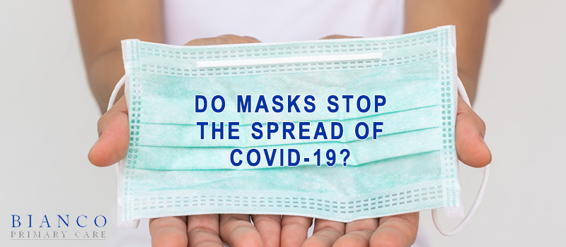

Do Masks Work To Stop The Spread of COVID-19?

How effective masks are against COVID-19?This question seems to be a major topic these days with a lot of 'experts' touting the effectiveness of masks and most major stores now requiring their use.The answer to me is 'it depends'.
The 'evidence' in favor of mask-wearing is not direct and has mostly been taken from computer models (which have been mostly wrong since the beginning of this pandemic).In medicine, we make treatment decisions, use new medications, approve new devices, etc.only after we have evidence in the form of the gold standard Randomized Controlled Trials (RCTs).The only one to date on masks was done in 2015 and is linked here: https://bmjopen.bmj.com/content/5/4/e006577.
In summary, this trial compared medical masks to cloth masks in healthcare workers.It was a 'good study' in that it used more than 1600 subjects in a variety of healthcare settings.The conclusion, as you can see from reading the study, is that cloth masks are problematic to say the least and even medical masks were not near perfect.The study found that masks, even medical-grade masks, are not effective at blocking the virus from the wearer.
The coronavirus is less than 0.125 microns in size.For reference, 1 micron is one-millionth of a meter or 1/25,000 of an inch.A cross-section of a single strand of human hair is 50 microns and the human eye can only discern to about 40 microns.Masks (including N95 respirator masks) are only able to filter out 0.30 micron particles.So, rather than being like a brick wall, most masks are more like a colander or sieve.Some particles will get filtered, but many will pass right through.
I also want to address the trend I am seeing and that is to talk about wearing a mask to protect others.I understand this is said on TV and the internet frequently, but it simply defies logic and is not true.Masks provide protection to the wearer, hence the term PPE, which stands for
Personal
Protective Equipment.Dr. Shelley and I have practiced extensively in hospital settings and taken care of highly contagious patients with infections that are spread by droplets and the only people in these settings that wear PPE are the healthcare workers and the caregivers, never the patients.If a mask protected others then we would have been employing that in the hospitals but we do not and never have.Multiple studies show that droplets are not contained by masks.
In addition, most people do not wear their masks properly and leave their nose or mouth partially exposed.Also, many people are re-wearing their masks.To control the spread of germs, the mask and gloves are meant to be a temporary barrier that are disposed of after use.If you are wearing a mask and gloves to prevent the virus from getting into your body, then presumably that virus is located on the exterior surfaces of the mask and gloves after a single-use.
If you remove the mask and store it in your purse or car, you have now contaminated your hands and any other surface that mask has come into contact with.If you go on to reuse that mask, you again are touching a contaminated surface and run the risk of transmitting those germs to yourself or others.We have seen many people leave the store, remove their mask and shove it into their purse, thus contaminating the entire contents of their purse which they will later touch while not wearing gloves.
We have also seen people wearing gloves, leave the store and get into the car without removing their gloves.Now the door handle, steering wheel and anything else touched with gloved hands are contaminated.
BOTTOMLINE: Masks provide some protection for the wearer of the mask.If you are in the high-risk group for contracting COVID19 or for complications from COVID19, then you should wear a mask anytime you will be indoors, around more than 10 people and cannot stay 6 feet or more apart from others.
Just remember, not all masks are created equal and most cloth masks are not very effective filters.If you choose to wear a mask, do not re-use masks without sanitizing them first.After removing your mask and BEFORE touching anything else, sanitize your hands.For healthy, low-risk individuals keeping your distance, avoiding large crowds and frequent hand washing are all great ways to keep you safe from infection.
Now is the time to have a health plan with an affordable Primary Care Doctor who knows you and you can reach when you need them.In-office, text, phone, email – No insurance required.
Posted On: 2020-07-24T00:00:00
Posted By: Dr. Michael Bianco D.O.
Content Date: 2020-07-24
Download Date: 2021-05-13
Document ID: L0C04BZ3G